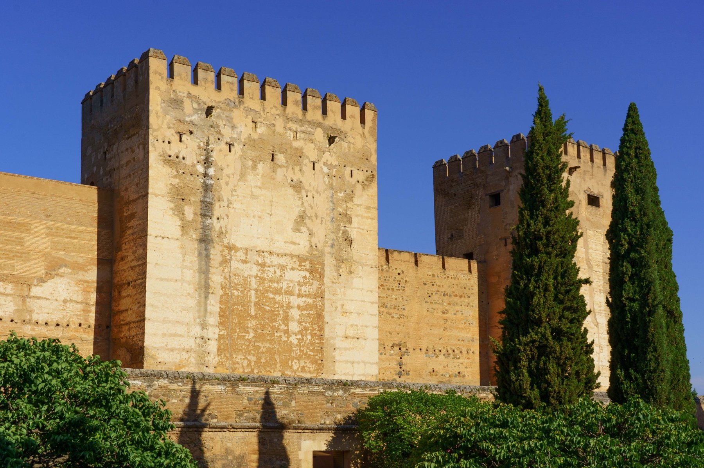
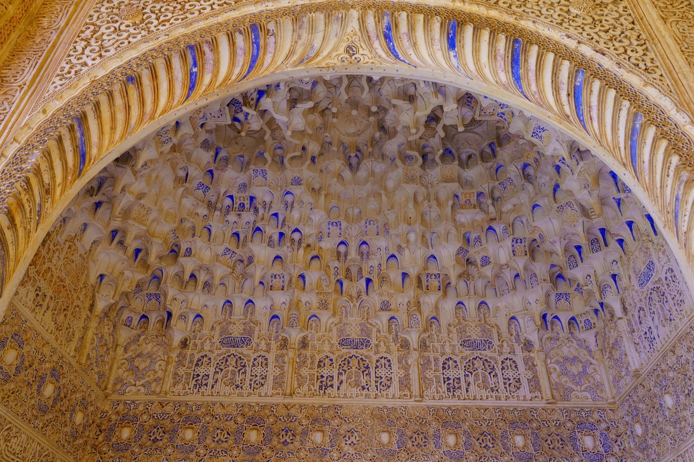
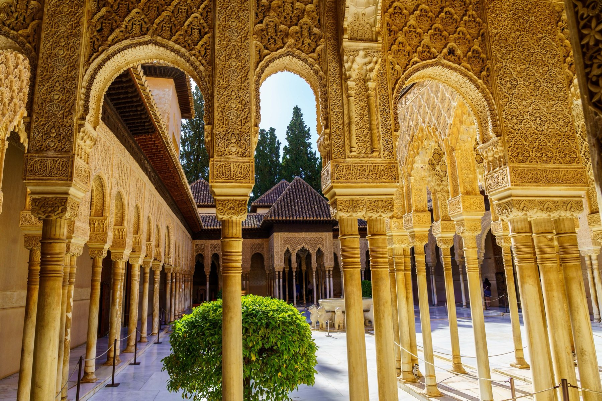
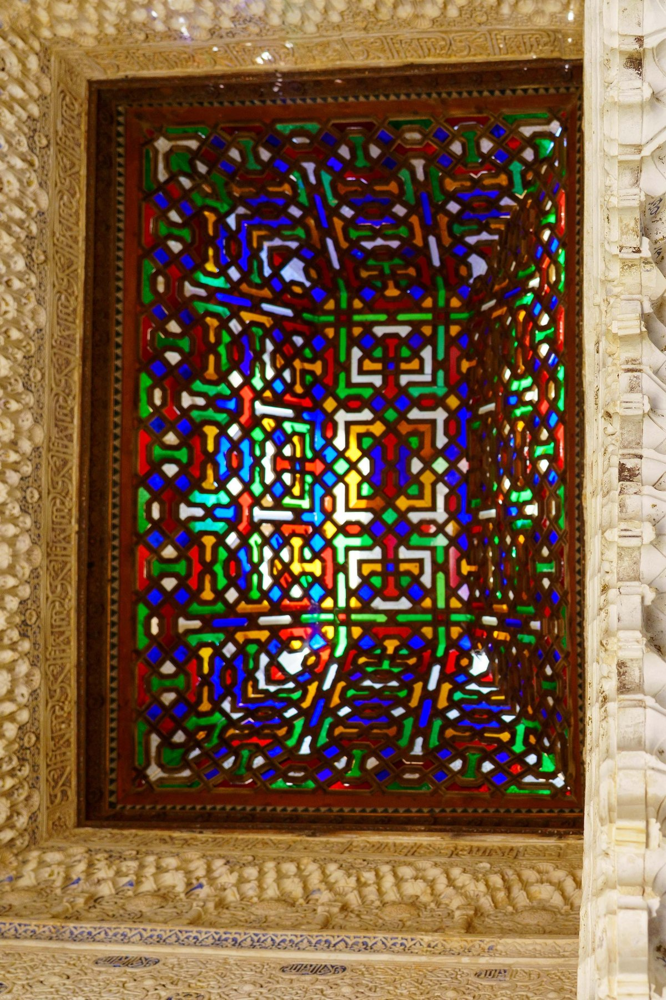
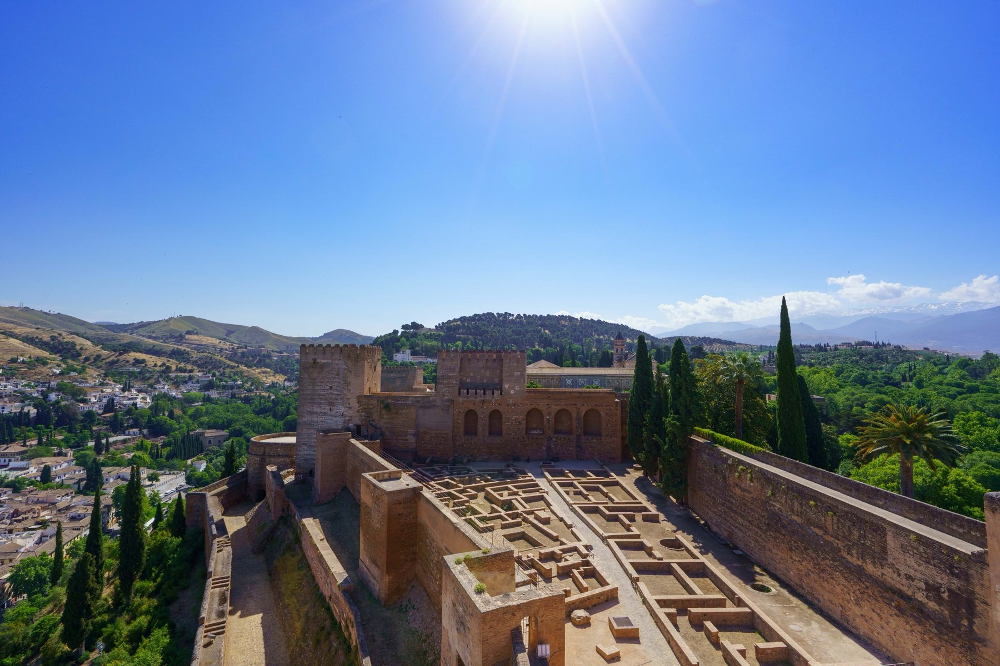
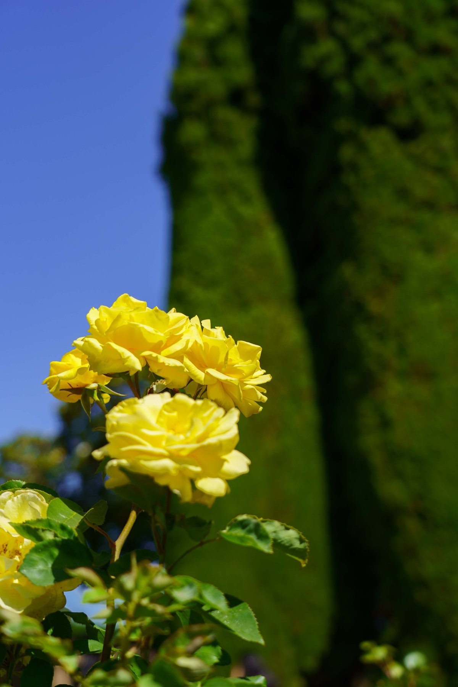
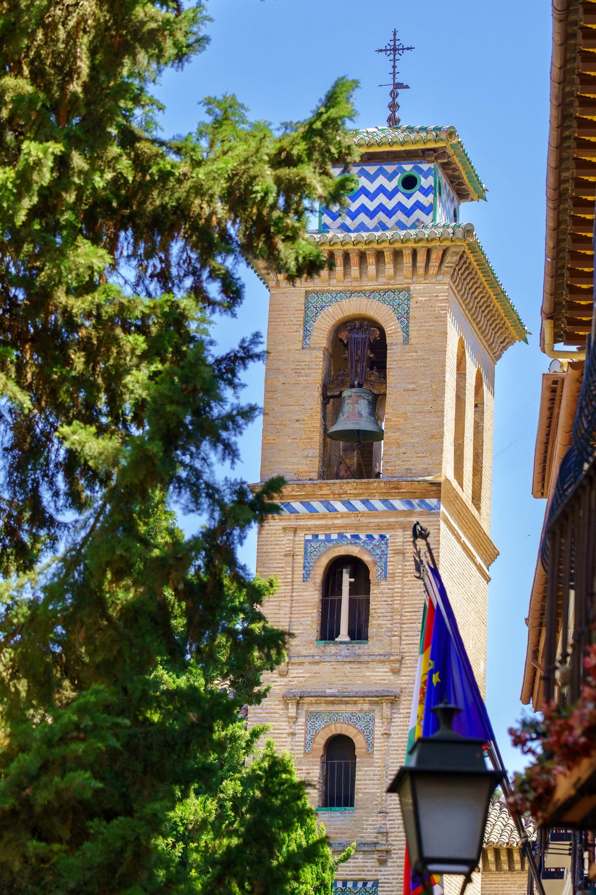
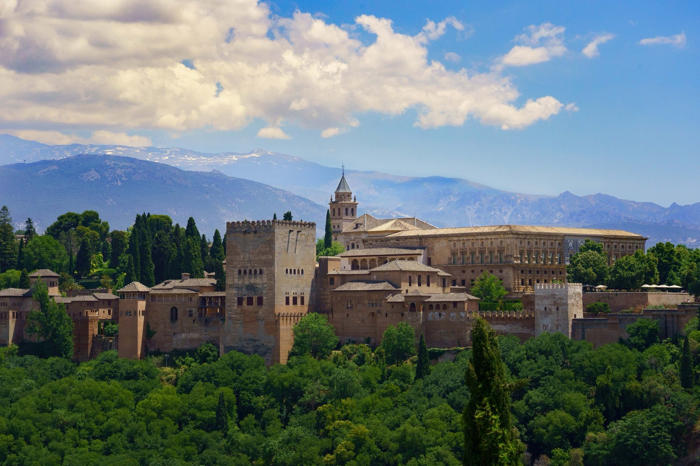
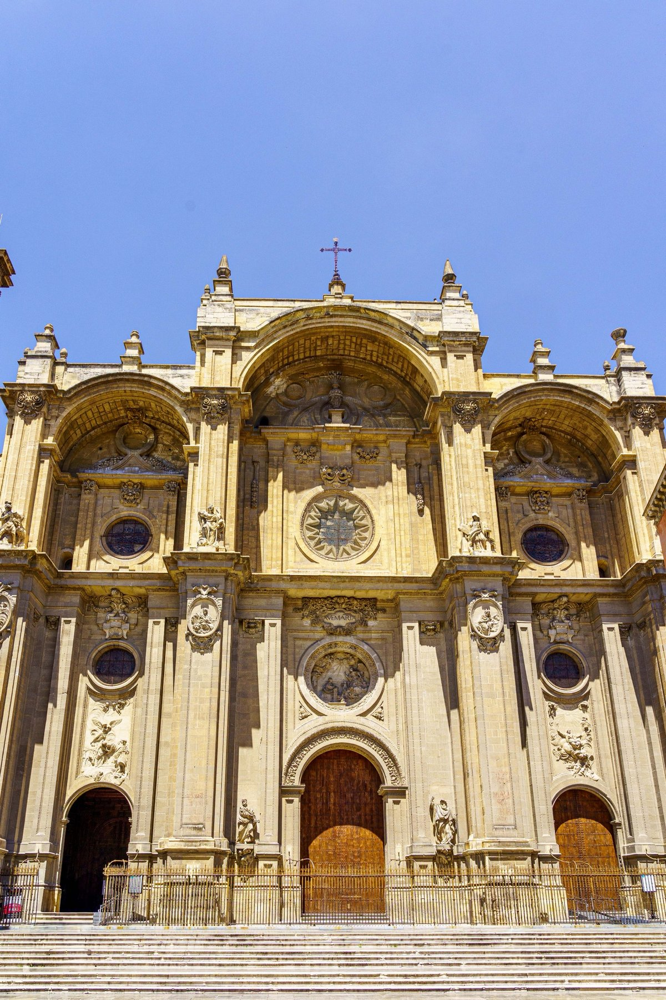

Granada
The Alhambra rewards an early arrival — its fortress towers rise first from the trees, followed by hall after hall of Nasrid stonework so intricate it borders on lace: a muqarnas ceiling collapsing into thousands of carved cells, the slender colonnade ringing the Court of the Lions, and stained glass filtering colored light into a quiet corner. From a distance, the whole complex reads as one long silhouette against the snow-capped Sierra Nevada, an image that repeats itself from the Alcazaba's ruined foundations and again from across the valley. Down in the gardens, yellow roses crowd a clipped cypress hedge and lily pads spread across a still reflecting pool. Below the hill, Granada's own Baroque cathedral holds its ground against all that Moorish history, and a tiled Mudéjar bell tower keeps watch over the narrow streets of the Albaicín.








